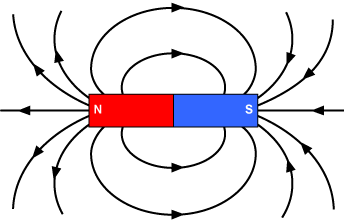
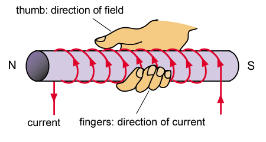
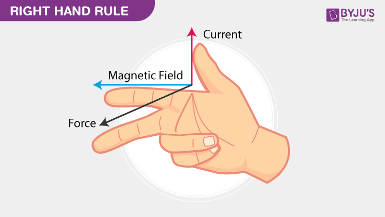
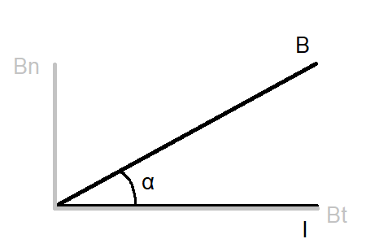

A magnetic field, by definition, is the area around a magnet where you feel its influence. A compass will always point towards the South pole of a magnet - the North pole on Earth is actually a magnetic south pole.
 From Northeastern UniversityAs you can see, magnetic field lines around a straight wire form a circular shape. The image also shows a right hand being used to figure out the direction of the field lines. If you take your right hand and aim your thumb in the direction of the electric current, your other 4 fingers will aim in the direction of the magnetic field lines forming a circle.
Let's derive a formula for magnetic field strength around a wire. This is proportional to the electric current, inversely proportional to the distance from the wire, and proportional to the medium between the wire and the point.$$B\approx I$$$$B\approx \frac{1}{r}$$$$B\approx medium$$The constant of proportionality will have the symbol µ and is called the magnetic permittivity of a medium. Since this is the magnetic field around a coil forming a circle, it will be µ/2pi here.$$B=\frac{\mu}{2\pi}\frac{I}{r}$$However, we are not finished. The system that is actually used for magnetic permittivity is relative magnetic permittivity, which displays how permittive a medium is compared to a vacuum.
The magnetic permittivity of a vacuum is 4pi*10^-7, so if a medium has a magnetic permittivity of 8pi*10^-7, its relative magnetic permittivity would be 2. This gives us a new formula:$$B=\frac{\mu_{0}\mu_{r}}{2\pi}\frac{I}{r}$$
| Name | Unit | Symbol |
|---|---|---|
| Magnetic Field Strength (B) | Tesla | T |
| Name | Symbol | Value |
|---|---|---|
| Magnetic Permittivity | µ | Medium-specific ((T*m)/A) |
In a coil with a current flowing through it, the magnetic field lines go throug and around the coil. We can once again use our right hand to figure out the direction. First, point your 4 fingers like the current moving through the coil, your thumb will point in the direction of the magnetic field. Within the coil, the magnetic field lines go from south to north, so you can figure out where the poles are.
 From GeocitiesNow for the calculation! It is once again proportional to electric current and medium, but this time not distance. Instead, for our derivation, let's imagine an infinitely long coil. The magnetic field strength is proportional to the amount of windings the coil has within a given length (N/l).$$B\approx I$$$$B\approx \frac{N}{l}$$$$B\approx medium$$We get this, without the 2pi this time:$$B=\mu_{0}\mu_{r}\frac{N}{l}I$$
The combination of an electric current and a magnetic field causes the creation of a force, called a Lorentz force. When drawing these 3 vectors, they must all be perpendicular to eachother. We will use the following right hand rule to figure out their directions.
 From Byju'sNow, let's derive the formula. Lorentz force is proportional to magnetic field strength, proportional to electric current, and it is proportional to the length of the wire inside of the magnetic field.$$F_{l}\approx B$$$$F_{l}\approx I$$$$F_{l}\approx l$$We need to add in a constant of proportionality, which we will give the value of 1 - do not ask me why.$$F_{l}=BIl$$But what if they are not perfectly perpendicular to eachother? In that case, we call the angle between the two non-perpendicular vectors α.
Here, we have Bn with n standing for normal, meaning perpendicular to I, as it should normally be. There is also Bt with t standing for tangent. Our formula in this scenario would be F=Bn*I*l, but we want to use B! Luckily, in the right triangle with corner α, the sine of α is equal to Bn/B, so Bn = sin(α)*B. We get a new formula:$$F_{l}=BIl⋅sin(α)$$This checks out, because a normal case would be 90°, and the sine of 90° is equal to 1.
First is two parallel wires. You can draw magnetic field lines around each wire, then draw the forces each wire applies on the other and eventually figure out the following. If both wires have a current going in the same direction, they will attract eachother. However, if the currents are travelling in the opposite direction, they will oppose eachother.
Second is the functioning of an electric motor.
As you can see, the electric motor is comprised of a magnetic north and south pole, as well as a coil (only one winding shown here) between the two. When you turn it on, a current can be seen, as well as magnetic field lines. The combination of the two can create Lorentz force. On the right, the force will point downwards, on the left it points upwards. The motor will spin in clockwise direction!
Single charges can also move through a magnetic field and create Lorentz force. There is a difference between positive and negative charges. For positive charges, the electric current vector faces in the same direction as the velocity vector of the charge. For negative charges, the electric current vector faces in the opposite direction of the velocity vector of the charge. This allows you to draw the force vector, but what about calculating it?$$F_{l}=BIl=B\frac{Q}{\Delta t}l=BQ\frac{l}{\Delta t}=BQv$$